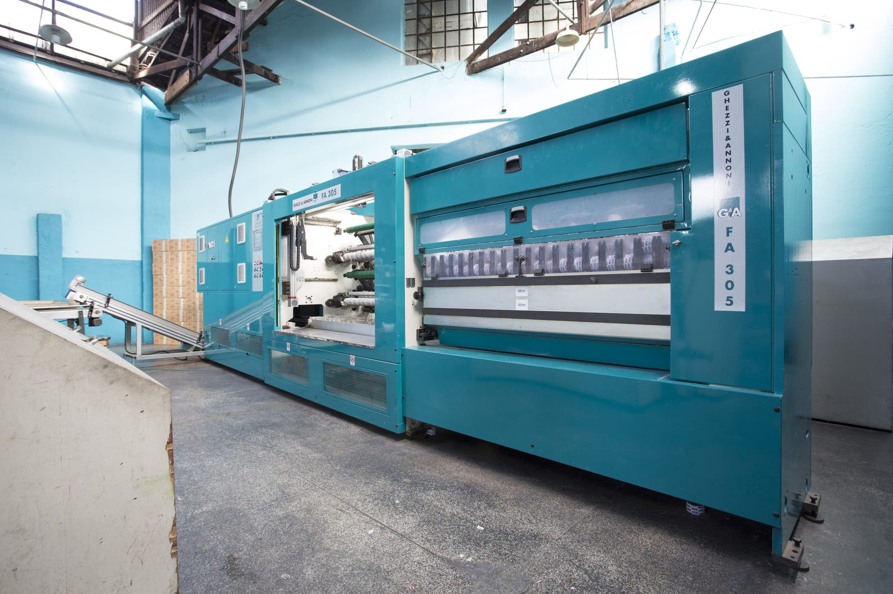

Fábrica própria em São Paulo
Toda a produção acontece na planta da Mooca, sem intermediários — direto do fabricante para o estoque do cliente.

Conheça a estrutura de 8.000 m², na Mooca, São Paulo, onde a FIT-PEL produz mais de 10 milhões de m² de fita adesiva por mês, com controle de qualidade em cada lote.

Assista a um vídeo institucional sobre a estrutura da fábrica:
Toda a produção acontece na planta da Mooca, sem intermediários — direto do fabricante para o estoque do cliente.
A fabricação acontece conforme o pedido chega, sem estoque parado, o que garante agilidade e produto sempre fresco.
Cada lote passa por testes de aderência, resistência ao rasgo e performance em embalagem antes de sair da fábrica.